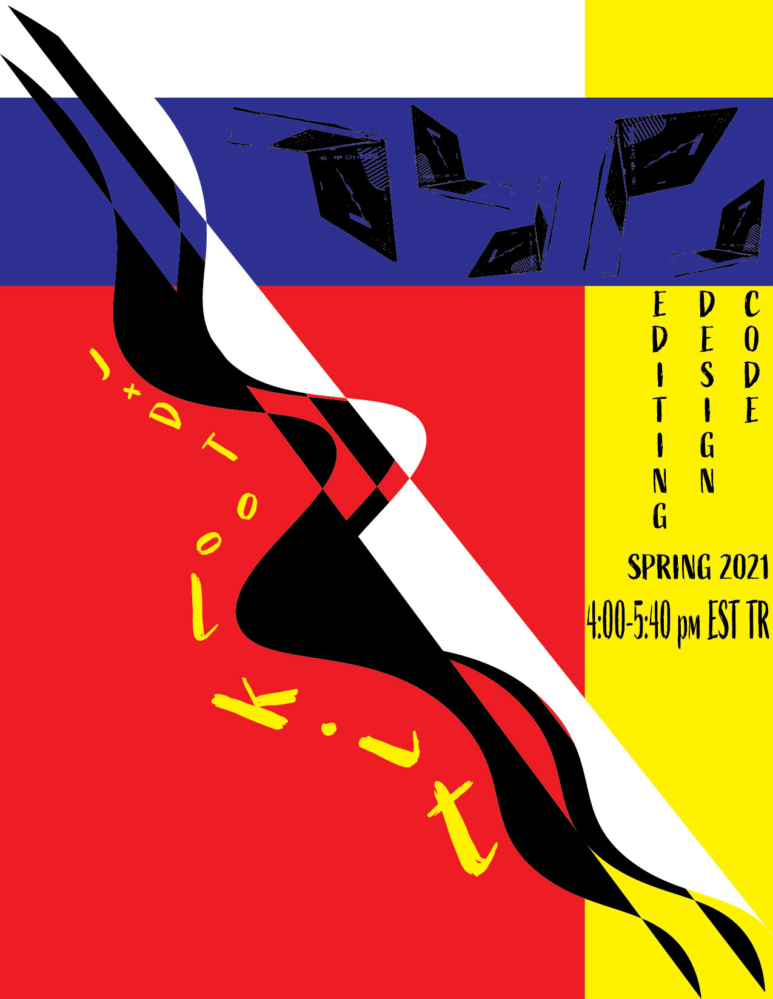

This poster was created using Adobe Illustrator and it is meant to advertise J+D Toolkit. To create this poster, I used the pen tool to get the squiggly black line and copy and pasted it to get multiple limes, creating a blocking and shadow effect. I used the type on a path tool to get the text to go alongside the black line. To create the background I used rectangles and made them primary colors, making a color-blocked background. I image traced a photo of my laptop to get it to be a black outline of the image and copy and pasted it multiple times to create a pattern on the blue line towards the top.
Here is the link to download: J+D Poster